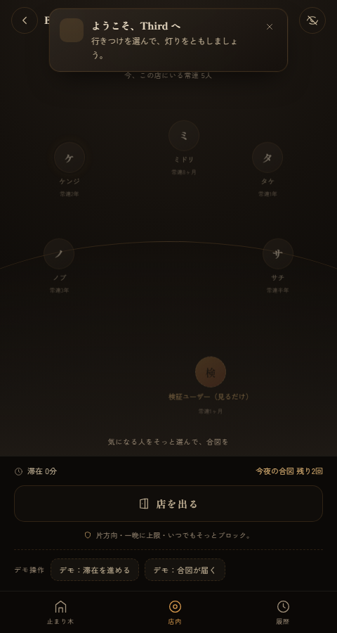
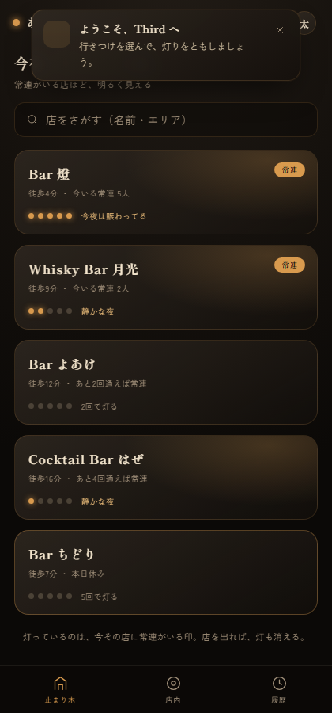
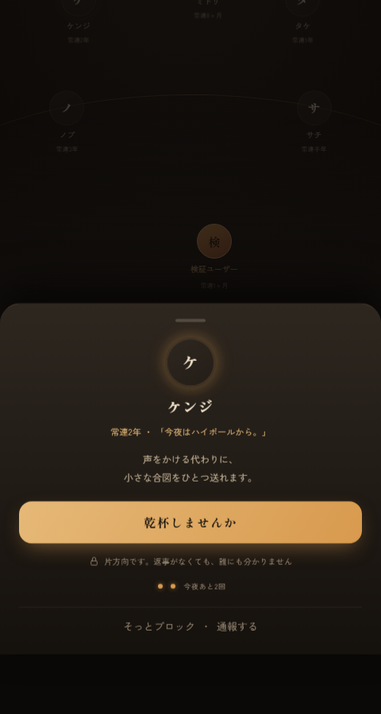
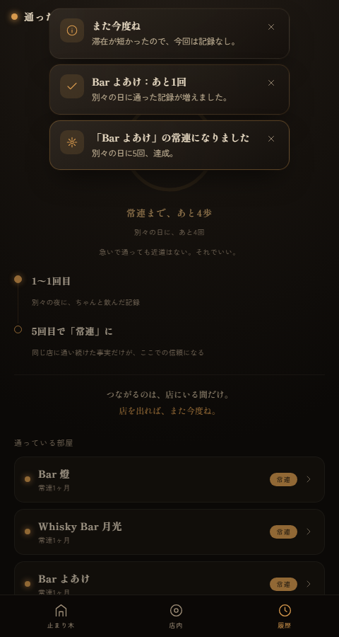

盛らない。追ってこない。店を出れば、関係はそっと消える。
家でも職場でもない第三の居場所＝サードプレイス。かつてバーには、深く話すわけではないが顔見知りで、行けば誰かがいる「気楽な常連関係」があった。
この温度感は、既存のSNSでもグループチャットでも再現できていない。
投稿は「観客」に向く。映え・演出から逃れられず、ありのままの常連関係が育たない。
一度つながると距離を置きづらい。気軽な関係が、重い関係になってしまう。
生成AIでコンテンツも偽アカウントも無限。「実在の人間と実際に会う」価値が相対的に上がっている。
巨大SNSは広告＝無限フィードに依存するため、「閉じた・その場限り・少人数」へ全振りできない。Thirdが狙うのは、まさにこの巨人が構造的に追随しづらい領域。孤独・サードプレイス喪失という都市生活者の本物の痛みに、正面から応える。
追わない。残さない。だから、気楽。
「人」から入るのではなく、「同じ店に通っている」という共通の行動から、そっと知り合う。
これらの要素はバラバラの機能ではなく、「気軽だけど安全な常連の場」という一点に向かって整列している。「つながりっぱなしのSNS」への、構造的なアンチテーゼ。

スマホ優先・全プラットフォーム対応の動くWebプロトタイプが、すでにあります。世界観とコア体験は、その場で触って確かめられます。



バニラ HTML / CSS / JS・ビルド不要・PWA対応。墨色の闇に、ウイスキーの琥珀と灯火のクリーム。
見出しは明朝体で和の品格を、本文は端正なゴシックで可読性を。
Thirdの強みは機能の数ではなく、構造にある。広告モデルの巨大SNSとは、目指す方向そのものが逆を向いている。
「閉じた・その場限り・少人数」は広告＝無限フィードのビジネスと真正面から衝突する。だから巨人は本気で寄せてこられない。これがThirdの、模倣されにくい構造的な堀になる。
「実際に知り合う」「夜・飲酒・初対面」── 最もリスクの高い組み合わせを、マスター常駐なしで運用する。安全設計はThirdの生命線です。
別々の日に5回通わないと常連になれない。出会い目的には割に合わず、通うコスト自体が悪意のフィルターになる。
つながれるのは今いる常連だけ。店を出れば切れる。店外の付きまとい・DMナンパが構造的に不可能。
合図は一晩1〜2回・無視は相手に伝わらない・そっとブロック。可視性は安全側がデフォルト。
守るべき最優先のユーザーは、一人で来た人が安心して使えること。性別比が崩れた瞬間に場は死ぬ。可視性デフォルト・受け手の主導権・モニタリングで、その一点を守り抜く。
各回一定時間以上の滞在で、その店の「常連」に昇格。急いで通っても近道はない。
通い続けた事実だけが、ここでの信頼になる。
SNS最大の急所は初日の過疎。これを一店舗集中投入で越える。創業者の行きつけバー一店に薪を集め、リアルな声かけ＋マスターの後押し＋SNS告知で火をつける。広く薄く配らない。
最初の一店が「開けば誰か常連がいる」状態になるまで集中。
同エリアの近隣バーへ。次に他エリア・他都市の文化へ。
コンシェルジュ型MVPで、コードの前に思想を現実でテスト。
これが立たなければ、機能をいくら足しても意味がない。補助指標は ── 一店舗あたりの常連密度／チェックイン後に常連リストを開く率／合図→現実合流の発生率／週次の再訪率／安全指標（通報率・性別比）。
動くWebプロトタイプ（GitHub: shotaro-nagano/Third）。コア体験と安全設計を実装・検証済み。
創業者の行きつけ一店での実地検証。コンシェルジュ型で仮説を確かめる。
Flutterで本実装（iOS/Android/Web/Windows）。Supabase/Firebaseで認証・DB・リアルタイム。
※ 導入は無料。人が集まるまで価値が出ないため、まず無料で集め切ってから回収する。収益機能は「映え」「つながりっぱなし」を促さないことを必ず確認する。
行きつけのバーの常連関係を、そのままデジタルに。
気軽だけど、安全な常連の場を。